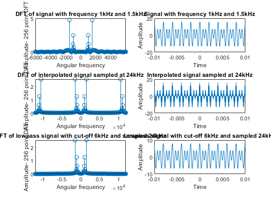

Fs = 12e3;
t = -1e-2:1/Fs:1e-2;
F = 1e3;
wave = [6 10]*cos(2*pi*[F 1.5*F]'.*t);
interpol = upsample(wave, 2);
lowpass_signal = lowpass(interpol, 6e3, 24e3);
subplot(321);
Y=abs(fftshift(fft(wave',256)))/256;
df = Fs/length(Y);
freqvec = -Fs/2:df:Fs/2-df;
stem(freqvec,Y);
xlabel('Angular frequency');
ylabel('Amplitude- 256 point DFT');
title('DFT of signal with frequency 1kHz and 1.5kHz');
subplot(322);
plot(t,wave);
xlabel('Time');
ylabel('Amplitude');
title('Signal with frequency 1kHz and 1.5kHz');
Fs = 24e3;
t = -1e-2:1/Fs:1e-2;
subplot(323);
Y=abs(fftshift(fft(interpol',256)))/256;
df = Fs/length(Y);
freqvec = -Fs/2:df:Fs/2-df;
stem(freqvec,Y);
xlabel('Angular frequency');
ylabel('Amplitude- 256 point DFT');
title('DFT of interpolated signal sampled at 24kHz');
subplot(324);
plot(t,interpol(2:end));
xlabel('Time');
ylabel('Amplitude');
title('Interpolated signal sampled at 24kHz');
subplot(325);
Y=abs(fftshift(fft(lowpass_signal',256)))/256;
df = Fs/length(Y);
freqvec = -Fs/2:df:Fs/2-df;
stem(freqvec,Y);
xlabel('Angular frequency');
ylabel('Amplitude- 256 point DFT');
title('DFT of lowpass signal with cut-off 6kHz and sampled 24kHz');
subplot(326);
plot(t,lowpass_signal(2:end));
xlabel('Time');
ylabel('Amplitude');
title('Lowpass signal with cut-off 6kHz and sampled 24kHz');
